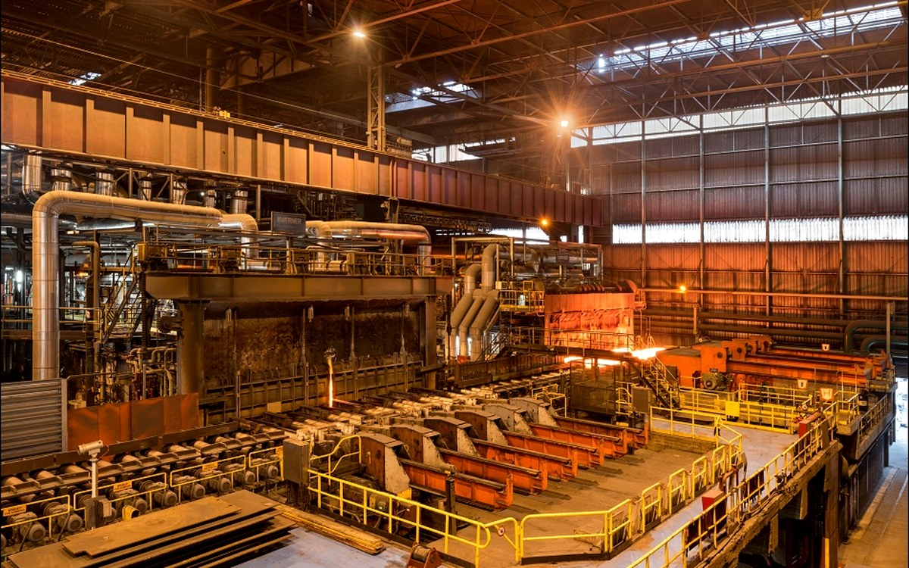
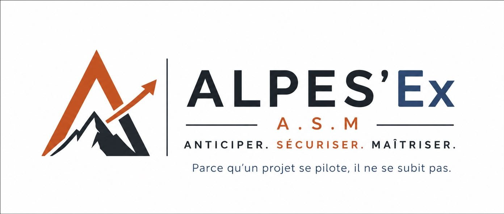
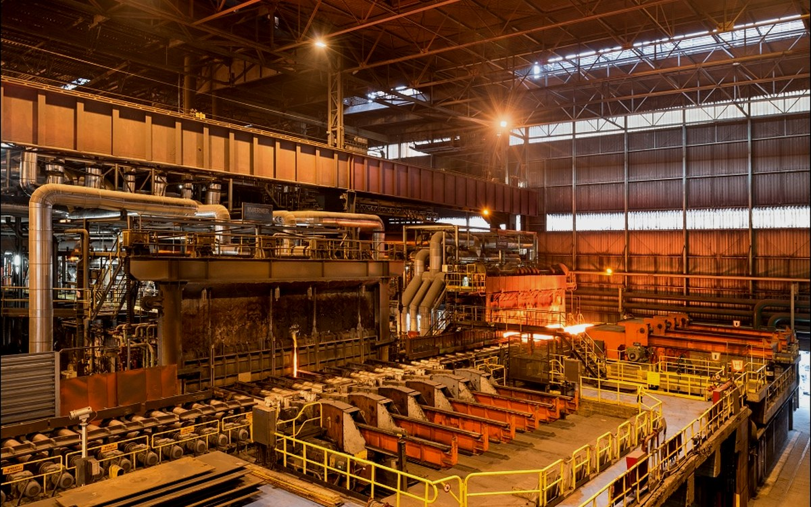
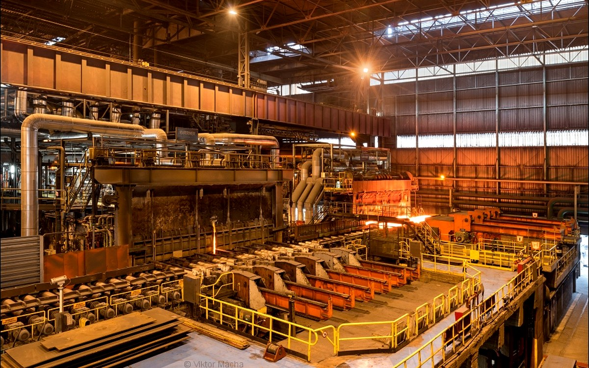
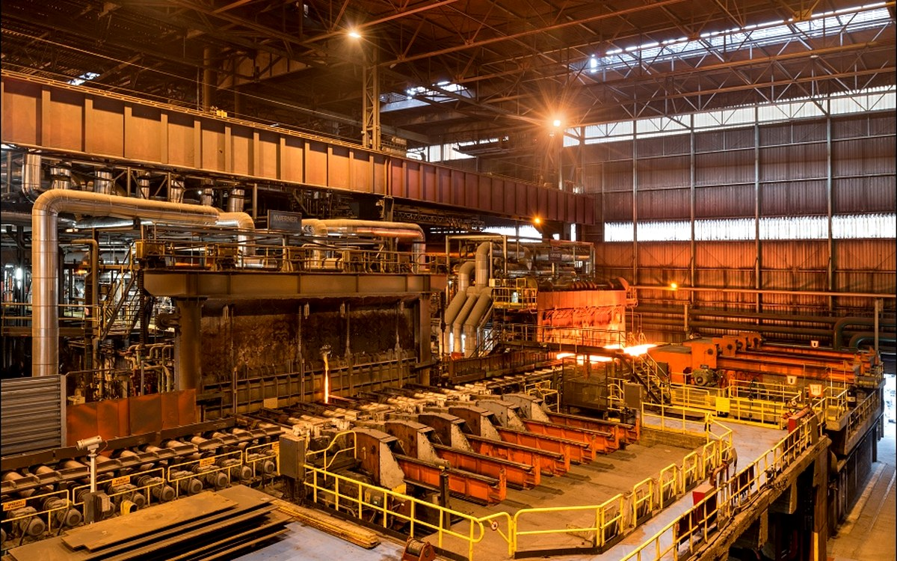
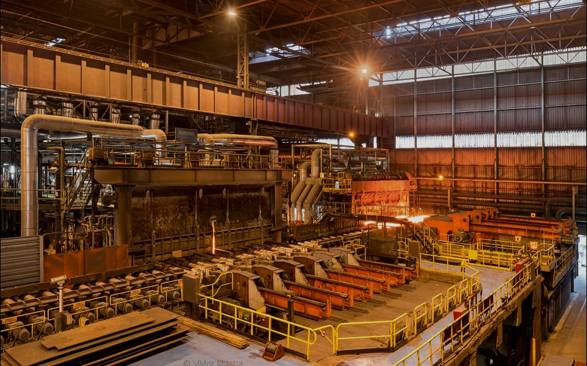
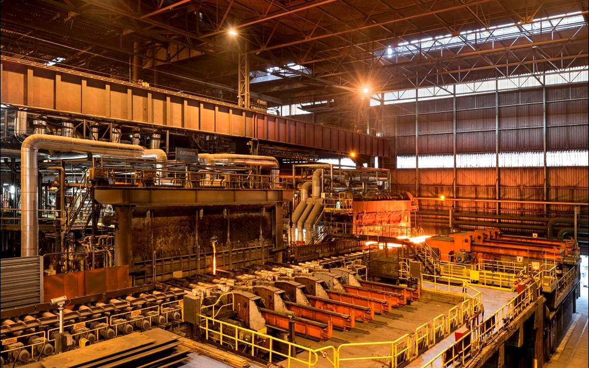

Fours industriels
Traitement thermique, interfaces process et mise en service.

Piloter vos projets industriels complexes avec méthode, rigueur et engagement — de l’avant-projet jusqu’au SAV.

Traitement thermique, interfaces process et mise en service.

Équipements techniques, réseaux et instrumentation.
Coordination multi-équipements et intégration.

Levage, logistique, sécurité et contraintes site.
Cadence, transfert industriel et performance.
Robotique, interfaces et validation fonctionnelle.
Chef de projet dans l’industrie depuis huit ans, je suis passionné par les technologies de pointe et par les environnements cadrés à forte valeur ajoutée. J’aime rendre le projet lisible grâce à des livrables précis, à jour et directement exploitables par la direction.
ALPES'Ex est né d’un constat simple : trop de projets avancent sans vision claire. Avec une méthode rigoureuse, une traçabilité maîtrisée et une communication structurée, la direction sait où en est le projet, quels risques doivent être arbitrés et quelles décisions doivent être prises.
La valeur ajoutée d’un chef de projet ne réside pas seulement dans la transmission d’informations, mais dans la coordination, l’anticipation, l’alerte au bon moment et la capacité à transformer un risque en obstacle franchi.
Discutons de votre projet →Le PC ASM centralise l’information utile, sécurise la traçabilité et donne au client une vision claire pour décider.
Avancement, jalons, risques, décisions, actions, coûts et livrables sont regroupés dans un même environnement.
Le client accède aux informations utiles, comprend les écarts et visualise les actions menées sans multiplier les fichiers.
Les informations sont structurées, protégées, historisées et mises à jour selon le rythme de gouvernance du projet.
Contrairement à un planning seul, le PC ASM relie le temps, les risques, les responsabilités, les choix et leurs impacts.
Cadrage du besoin, faisabilité, budget, risques et planning cible.
Analyse technico-économique, enjeux contractuels et données disponibles.
Définition des rôles, responsabilités, gouvernance et communication.
Jalons, livrables, plan d’actions, risques et règles de fonctionnement.
Pilotage technique, validations, interfaces et suivi documentaire.
Suivi fournisseurs, délais critiques, conformité et anticipation des écarts.
Avancement, qualité, charge, points bloquants et plans de rattrapage.
FAT, validation qualité, réserves et préparation de l’expédition.
Emballage, logistique, levage, douane et coordination site.
Organisation chantier, sécurité, interfaces et suivi quotidien.
Montée en performance, réception, formation et traitement des réserves.
Bilan, capitalisation, transfert des connaissances et amélioration continue.
Pilotage international, gestion des retards, coordination d’équipes multiples et sécurisation des jalons de livraison.

Préparation des essais, coordination technique, validation atelier et accompagnement sur site client.

Évolution du périmètre, pilotage technique, suivi budgétaire, conformité et mise au point d’une installation complexe.
Capitalisation, duplication d’installation, interfaces utilités et gestion des écarts jusqu’à la mise en service.

Replanification, moyens de levage, logistique internationale, changement de destination et réduction majeure du délai chantier.
Définition de la stratégie, planification des interventions et sécurisation de la disponibilité d’une installation neuve.
Pas de recrutement long pour une mission temporaire. L’intervention s’adapte au projet, à sa charge et à sa durée réelle.
Une culture projet déjà acquise dans des environnements internationaux, techniques et fortement exigeants.
Un regard externe facilite le diagnostic, l’alerte, la priorisation et la prise de décision sans perdre la réalité du terrain.
Une prestation ciblée, sans les coûts indirects d’un recrutement durable pour une mission « one shot ».
Projet en retard, lancement d’une installation, surcharge temporaire, déménagement industriel, absence d’un chef de projet, besoin de structuration, difficulté de coordination ou manque de visibilité direction.
Le planning ne suffit pas. Il faut relier décisions, risques, ressources et actions correctives.
Disponibilité des études, dérive fournisseur, décisions en attente, charge terrain et communication incomplète.
Moins de comptes rendus descriptifs, davantage de décisions, responsables, échéances et impacts.
Non. ALPES'Ex intervient en Rhône-Alpes, partout en France et à distance selon la nature du projet. Les déplacements sont organisés en fonction des phases critiques et des besoins terrain.
Oui. Les missions peuvent inclure des déplacements en Europe et hors Europe, notamment pour les essais, les transferts industriels, les chantiers et les mises en service.
Selon le niveau de définition du besoin, la mission peut être proposée au temps passé, sur une base journalière, ou au forfait pour un périmètre clairement défini.
Le tarif dépend du périmètre, de la durée, du lieu d’intervention, du niveau de responsabilité et des déplacements. Une proposition claire est établie après un premier échange.
Oui. C’est même l’un des principaux avantages d’un chef de projet externalisé : s’intégrer rapidement à l’organisation existante tout en apportant méthode, recul et capacité de coordination.
Oui, lorsque cela est nécessaire. Le PC ASM complète les outils existants sans chercher à remplacer l’ERP, la GED ou le planning de l’entreprise.
Décrivez brièvement votre besoin, votre contexte et vos contraintes. Vous recevrez une première réponse sur le mode d’intervention le plus adapté.
alpes.ex.asm@gmail.com